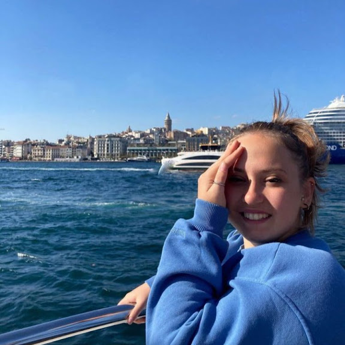

Hello, I'm Berna
Computer Teacher | Educational Technologist | Software Developer
About Me

I am a third-year student at Hacettepe University, Department of Computer Education and Instructional Technologies.
My CVProjects
Library Management System
This project is developed using Java to create a Library Management System. Users can borrow books, return them, pay fines, and get information about the available books in the system.
View on GitHubWeather Condition
A web-based weather application built with HTML, CSS, JavaScript, and React that displays real-time weather data.
View on GitHub